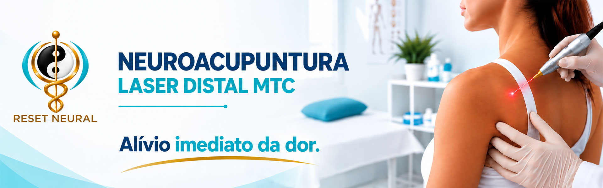
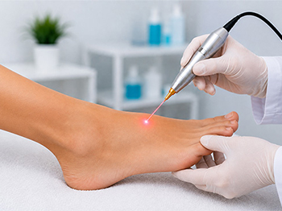
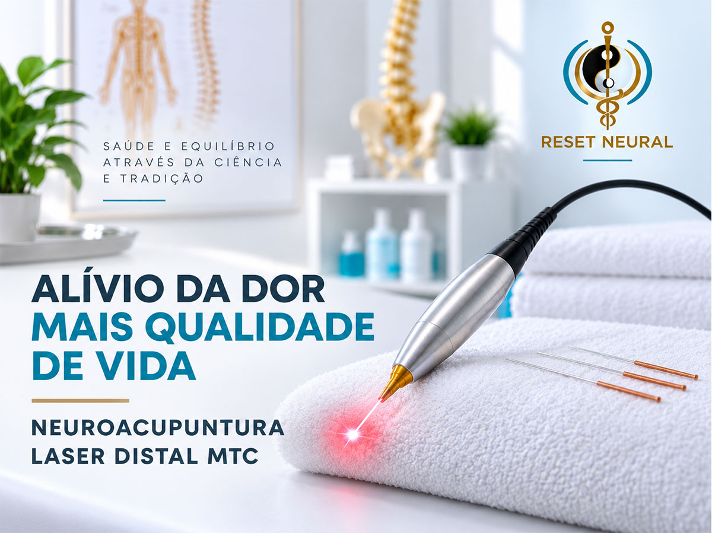

A dor crônica não precisa fazer parte da sua rotina. Unimos o conhecimento milenar dos canais energéticos e neurais à precisão da fotobiomodulação a laser. O resultado é um estímulo profundo em pontos distais estratégicos, capaz de modular a resposta do sistema nervoso e proporcionar uma experiência confortável, indolor e livre de agulhas.

Tratamento 100% não invasivo e indolor, ideal para quem busca eficácia sem o desconforto das agulhas.
Atuamos em pontos estratégicos distais, estimulando as vias neurais sem tocar na região inflamada ou dolorida.
A energia da luz impulsiona a resposta terapêutica do corpo de forma acelerada e segura.
Atendimento Home Care personalizado para São Paulo e ABC Paulista.
Tensão acumulada, rigidez muscular e limitação de movimento.
Dores persistentes na coluna, compressões e irradiações para as pernas.
Desconfortos articulares, desgaste e perda de mobilidade.
Suporte complementar direcionado para tendinites, bursites e dores crônicas.
Mapeamos suas queixas, histórico e a origem do desconforto para estruturar um plano terapêutico exclusivo.
Aplicação indolor da luz laser em pontos distais estratégicos, estimulando a autorregulação do sistema nervoso.
Avaliamos a evolução da sua resposta terapêutica a cada sessão para orientar os próximos passos do cuidado.
Você não precisa enfrentar o trânsito ou o estresse do deslocamento para cuidar da sua saúde. Levamos a Neuroacupuntura Laser até você.
Uma abordagem que combina laser e princípios da Medicina Tradicional Chinesa de forma não invasiva.
Receba seu atendimento com conforto e praticidade, respeitando seu ritmo e suas necessidades individuais.
Veja a aplicação prática e o padrão de excelência dos nossos atendimentos.
Encontre respostas para as principais dúvidas sobre a técnica, o atendimento e a modalidade Home Care.
A Neuroacupuntura Laser Distal é uma abordagem que utiliza estimulação por laser em pontos distais do corpo, dentro de uma abordagem relacionada à acupuntura e aos princípios da Medicina Tradicional Chinesa.
O atendimento começa com uma avaliação individualizada. A partir dela, são definidos os pontos de estimulação e realizada a aplicação do laser, seguida de acompanhamento conforme a necessidade de cada pessoa.
Não. A proposta apresentada pela Reset Neural utiliza laser para a estimulação dos pontos, sem a necessidade de inserção de agulhas.
A Reset Neural apresenta a Neuroacupuntura Laser Distal como uma abordagem relacionada ao cuidado de diferentes condições, incluindo dor cervical e nos ombros, lombalgia, ciatalgia, desconfortos relacionados a joelho e cotovelo e processos inflamatórios. A indicação deve ser avaliada individualmente.
A acupuntura é estudada para diferentes tipos de dor e pode apresentar benefícios em algumas condições. Os resultados podem variar entre pessoas e condições. A indicação da Neuroacupuntura Laser Distal deve ser avaliada individualmente.
No atendimento Home Care, o profissional realiza o atendimento no espaço do cliente. A modalidade oferece uma alternativa para quem busca maior comodidade e conforto, conforme disponibilidade de atendimento.
O atendimento é apresentado em três etapas: avaliação detalhada, estimulação laser precisa e acompanhamento contínuo.
A Reset Neural informa atendimento em São Paulo e ABC Paulista, incluindo a modalidade Home Care. Para verificar disponibilidade e condições de atendimento, entre em contato pelo WhatsApp (11) 94197-1140.
Tire suas dúvidas sobre a Neuroacupuntura Laser Distal e converse diretamente com o especialista.

Quer saber mais sobre o atendimento ou entender como a Neuroacupuntura Laser Distal pode fazer parte do seu cuidado?
FALE PELO WHATSAPP (11) 94197-1140 → contato@resetneural.com.br{kind=link}
{kind=link}
{kind=link}
{kind=link}
{kind=link}
{kind=link}
{kind=link}